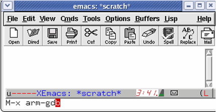
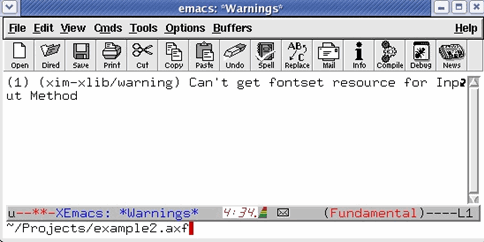
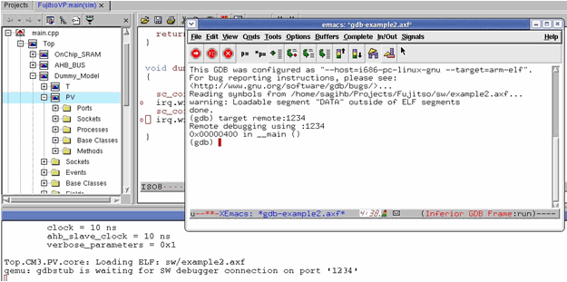
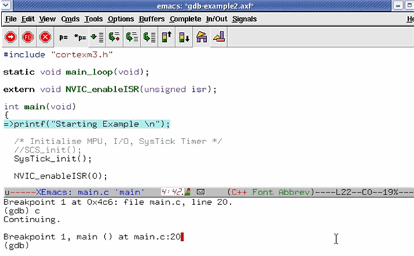

Debug Flow Using GDB
- Specify the GDB stub port (i.e. 1234) through the model parameters or through an external parameters file (refer to GDB Stub Port (gdbstub_port) for the parameter descriptions).
- Start simulation in Vista.
- Invoke “xemacs” -load arm_gdb.el (refer to ARM GDB Cross Debugger Configurations).
- Press Alt + x.
- Type arm-gdb to start the arm cross debugger.
Figure 8‑12.
ARM Cross Debugger

- At the GDB prompt specify the path to the software ELF image files.
Figure 8‑13.
SW Executable

- Start the simulation and wait for the following prompt:
“qemu: gdbstub is waiting for SW Debugger connection on port '1234' “
- At the GDB prompt, type target remote: 1234.
Figure 8‑14.
Connect To Target

- Type the following commands
Figure 8‑15 demonstrates the debugger state at the beginning of the debug session:
Figure 8‑15.
Debug Sequence
